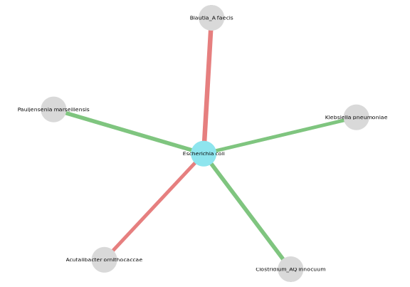

NeighborFinder is an R package enabling the identification of the local neighborhood of a species of interest, based on microbiome data.
Using cross-validated multiple linear regression with ℓ1 penalty and microbiome-specific filters, our approach infers interpretable species-centered interactions, with F1 score ≥ 0.95 on simulated datasets ranging from 250 to 1000 samples.
From several abundance tables of metagenomic data, NeighborFinder suggests a shortlist of companion species based on the integration of results. A visualization via a network is proposed.
NeighborFinder is tailored to microbiome data. It was specifically developed for shotgun metagenomic data and includes a default normalization step for such datasets, but can accommodate metabarcoding data (and other count-based inputs) by skipping it.
Installation
You can install the latest NeighborFinder version from the public github repo
if (!requireNamespace('remotes')) {
install.packages("remotes")
}
remotes::install_github('metagenopolis/NeighborFinder')Note that this R package depends on versions >= 3.5.0 and was recently tested on R 4.4.1.
Input
The main input of apply_neighborfinder() is an abundance table with species as rows and samples as columns. For more details, see section “Input dataframe format” in the Tech report. For an illustrated example, please refer to the vignette.
Output
The output is an edge table in tibble format, i.e. a table with 3 columns: node1, node2, and coef. This table gathers the potential neighbors of a species of interest found with apply_neighborfinder(). With this output, a network can be created with visualize_network().
Basic usage
1. Download data
Here is a quick example with the data included in this package.
2. Apply NeighborFinder on a species of interest
Let’s look at the neighborhood of Escherichia coli in the Japanese participants from this cohort.
res_CRC_JPN <- apply_NeighborFinder(
data_with_annotation = data$CRC_JPN,
object_of_interest = "Escherichia coli",
col_module_id = "msp_id",
annotation_level = "species",
prev_level = 0.30,
filtering_top = 30
)3. Visualize network
visualize_network(
res_CRC_JPN,
taxo,
object_of_interest = "Escherichia coli",
col_module_id = "msp_id",
annotation_level = "species",
label_size = 4,
annotation_option = TRUE,
seed = 2
)
Full tutorial
The vignette provides an overview of the various use cases of NeighborFinder through examples based on real data extracted from this repository.